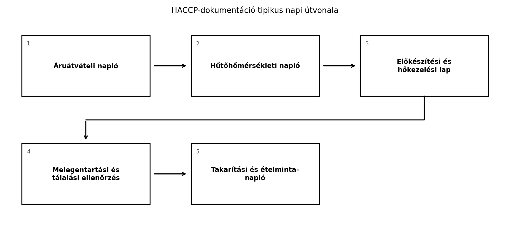

Képzeld el, hogy a konyhafőnök reggel átnézi a hűtő hőmérsékleti naplóját, és azt látja, hogy éjjel a húshűtő 11 °C-on állt. A napló üres, senki sem írt be semmit. Közben megérkezik a tojásszállító, de a szállítólevélen nincs tételszám. Később az egyik vendég allergiás reakcióra panaszkodik, és a hatósági ellenőr is megjelenik.
Ilyenkor már nem elég tudni, hogy mit kellett volna jól csinálni. Bizonyítani is kell, hogy valóban jól csináltuk. A HACCP-rendszer akkor ér valamit, ha a méréseket, ellenőrzéseket, hibákat és javításokat írásban vagy digitálisan rögzítjük, és a feljegyzések visszakereshetők.
Ebben az alfejezetben megtanulod, hogyan kell kitölteni a mindennapi HACCP-dokumentumokat, hogyan kell egy hibát helyesbíteni, és miért fontos a nyomonkövethetőség.
Továbbvitt eredmény. A pontos HACCP-dokumentáció és a helyesbítő tevékenység rögzítése az A szakmai vizsga felépítése és az elméleti felkészülés alfejezetben is előkerül, a gyakorlati vizsgán pedig a menü munkatervének és az ellenőrzési pontoknak a bemutatásakor használod Gyakorlati vizsga: menükészítés munkatervvel és értékelés.
A napi HACCP-dokumentáció egy rövid útvonalat jár be:

A séma azt mutatja, hogy a dokumentumok nem különálló papírok, hanem egy folyamat láncszemei. Ha egy láncszem hiányzik, nem lehet visszakövetni, hogy az étel biztonságos úton jutott-e el a vendégig.
Definíció. HACCP-dokumentáció. A HACCP-rendszer működését igazoló feljegyzések összessége: mérési lapok, ellenőrző listák, karbantartási feljegyzések, oktatási naplók, ételminta-nyilvántartások és a helyesbítő tevékenységek rögzítése.
Definíció. Nyomonkövethetőség. Az élelmiszer útjának visszakereshetősége egy lépéssel hátra, a beszerzés felé, és egy lépéssel előre, a felhasználás vagy a vendég felé. A nyomonkövetéshez termékazonosító, tételszám, szállítói adat, mennyiség és dátum kell.
Szabály. A bejegyzést a mérés vagy az ellenőrzés időpontjában kell rögzíteni. Olvashatóan, azonosítható aláírással. Elírást csak egy vonallal áthúzva, a helyes értékkel, dátummal és aláírással szabad javítani; az eredeti értéknek olvashatónak kell maradnia. Az üres mező nem jelent „rendben volt”; az elvégzett ellenőrzést írásban is meg kell jeleníteni.
Jogszabály. A 852/2004/EK rendelet és a hazai élelmiszerlánc-szabályozás szerint a vendéglátó üzemeltetőnek a HACCP-alapú eljáráshoz szükséges nyilvántartásokat vezetnie kell, és azokat a hatósági ellenőrzés során be kell mutatni. Az adatkört és a megőrzési időt a jogszabály, a NÉBIH-útmutató és az üzemi HACCP-terv határozza meg (ellenőrizendő: hatályos előírások, megőrzési idő).
Tilos. Utólag, emlékezetből kitölteni a naplót; letakarni, leragasztani vagy átjavítani a mért értéket; úgy hagyni egy hibás értéket, hogy nem dokumentálod a helyesbítést.
| Dokumentum | Mit igazol | Jellemző gyakoriság | Kitölti | Példa bejegyzés |
|---|---|---|---|---|
| Áruátvételi lap | szállító, termék, tétel, hőmérséklet, minőség, döntés | minden szállításnál | raktáros vagy szakács | csirkemell, 3,1 °C, átvehető |
| Hűtő-hőmérsékleti napló | készülék, idő, hőmérséklet, eltérés | naponta legalább kétszer | kijelölt szakács | H2 hűtő, 08:00, 4,2 °C |
| Hőkezelési lap | étel, tétel, kezdés, maghőmérséklet, érzékszervi jelek | minden nagy tételnél, CCP-nél | szakács | csirkepörkölt, 82 °C maghő |
| Melegentartási/tálalási lap | melegen tartási hőmérséklet, idő, ellenőrzés | fogyasztási idő alatt | szakács | leves, 68 °C, 11:30 |
| Takarítási napló | terület, szer, koncentráció, idő, ellenőrzés | műszak végén | takarító, szakács | hidegkonyha pult, 2 perc |
| Ételminta-napló | étel, tétel, mintavétel, tárolás, selejtezés | minden mintaköteles tételnél | kijelölt személy | csirkepörkölt, minta 12:15 |
| Oktatási napló | téma, előadó, résztvevők, dátum | oktatás alkalmával | vezető | kézmosási oktatás |
A fenti lapok lehetnek papíralapúak vagy digitálisak. A tartalmi követelmény ugyanaz: ki, mit, mikor, mivel, milyen eredménnyel ellenőrzött, és mi történt eltérés esetén.
Az áruátvétel az első olyan pont, ahol a szennyezett vagy nem megfelelő alapanyagot el kell utasítani. A lapon szerepeljen:
Higiénia. A hűtött húsnál, halnál, tojásnál és tejterméknél az átvételi hőmérséklet kritikus szabályozási pont lehet. Ha például a hűtött baromfi átvételi határa legfeljebb 4 °C (a könyv baromfira vonatkozó tanulási értéke; a HACCP-terv ennél szigorúbbat is előírhat), és 6 °C-ot mérünk, az eltérést nem szabad „eltűnni hagyni”. Az árut jelölni kell, a beszállítóval egyeztetni kell, és a lapra be kell írni: „visszautasítva”. A konkrét hőmérsékleti határ az üzemi HACCP-tervben szerepel (ellenőrizendő: aktuális határérték).
A hűtő hőmérsékletét akkor kell rögzíteni, amikor a berendezés már stabilan működik, nem közvetlenül nagy mennyiségű meleg étel betárolása után. A naplóban szokásos mezők:
Higiénia. Ha a hűtő hőmérséklete a HACCP-tervben rögzített határ fölé emelkedik, a hűtött, romlandó élelmiszert át kell helyezni egy megfelelő hideg tárolóba. Az ételt soha ne úgy tartsd meg, hogy „majd később úgyis megfőzzük”. A veszélyeztetett idő- és hőmérséklettartományban eltöltött időt is ellenőrizni kell (ellenőrizendő: konkrét idő- és hőmérséklethatár).
A hőkezelési lap a legfontosabb kritikus szabályozási pontok egyikét igazolja. A lapon rögzítsd:
HACCP – hőkezelés. Veszély: a nem megfelelően átsütött húsban vagy tojásban túlélhetnek kórokozók. Felügyelet: maghőmérővel a legvastagabb részben, a folyamat végén. Kritikus határ például baromfi esetén gyakran legalább 75 °C, de az üzemi HACCP-terv és a technológiai előírás a mérvadó (ellenőrizendő: aktuális érték). Helyesbítés eltéréskor: a hőkezelés folytatása a kritikus határ eléréséig, majd újraellenőrzés és bejegyzés.
A takarítási napló akkor használható bizonyítékként, ha nem csak a „takarítás megtörtént” szöveget tartalmazza. Írd be:
A takarítószer pontos adagolása a gyártói adatlapon, a munkavédelmi előírásban és a HACCP-tervben szerepel (ellenőrizendő: koncentráció, behatási idő).
Az ételminta nem maradék, hanem visszamenőleges bizonyíték. Ha néhány órával vagy nappal később több vendég megbetegszik, a laboratórium a mintából meg tudja vizsgálni, hogy a konyhai ételben volt-e kórokozó vagy toxin.
Szabály. Az ételmintát tiszta, zárható edénybe kell tenni, felcímkézve, a többi élelmiszertől elkülönítve tárolni, és a HACCP-terv szerinti ideig megőrizni. Tanulási értékként gyakori előírás: legalább 100 g minta, hűtve 0–5 °C-on (a könyv egységes hűtési tartománya; a közétkeztetési és rendezvényi gyakorlatban szigorúbb, pl. 0–4 °C is előfordul) 72 órán át; fagyasztásos megőrzés csak a HACCP-terv kifejezett előírása esetén (ellenőrizendő: NÉBIH-útmutató, közétkeztetési előírás).
A címkén szerepeljen:
Számítás. Ha a mintát 12:15-kor tettük hűtőbe, és 72 órán át kell tárolni, akkor a selejtezést legkorábban 3 nappal később, ugyanabban az órában kezdhetjük meg (például hétfő 12:15 → csütörtök 12:15):
A naplóba a tényleges selejtezést is írd be, például: „Selejtezve: +3. nap 13:00, aláírás: K. P.”
A nyomonkövethetőség alapkérdése: honnan jött az alapanyag, és hová került az étel?
Ehhez az áruátvételnél meg kell őrizni legalább:
A konyhán belül a saját gyártású tételeket is jelölni kell. Például: „Csirkepörkölt tétel: 2025-05-02/A, készült: 11:45–12:10, tárolás: hűtő H-1.” Ezzel az azonosítóval egy készétel is visszakereshető.
Példa. A szezámmag-szállító telefonál, hogy a „Tétel S-240512” tételben kórokozó lehet. A konyhán a következőt kell tenni:
A termékvisszavonás általában azt jelenti, hogy az élelmiszer még nem került a vendéghez. A termékvisszahívás akkor történik, ha már eljutott a fogyasztóhoz, vagy ez feltételezhető. A konyhán a legfontosabb az azonnali zárolás: a gyanús élelmiszert félretesszük, lecímkézzük, és megakadályozzuk a felhasználást egészen a szállítói vagy hatósági utasításig.
A hatósági ellenőr a következőket kérheti:
Ha az ellenőr hibát talál, például hiányos hűtőnaplót, akkor nem a papír hiánya a legnagyobb baj, hanem az, hogy nem tudjuk igazolni az élelmiszer-biztonsági felügyeletet. Ilyenkor is a helyes válasz: „az eltérést dokumentáljuk, a helyesbítést azonnal elvégezzük, és bemutatjuk a jövőbeli megelőzés módját.”
A digitális HACCP-rendszerben a méréseket tablet vagy telefon rögzíti, a hűtőhőmérsékletet szenzor küldheti. A rendszer azonnal jelez, ha egy érték kívül esik a határon, és a feladatokat listába rendezi.
A digitális rendszer előnye:
Figyelem. A digitális rendszer sem helyettesíti az embert. Ha a szenzor hibás értéket mutat, a szakácsnak akkor is ellenőriznie kell az ételt. Áramkimaradás vagy rendszerhiba esetére érdemes papíralapú tartalék lapot tartani.
Cél. Gyakorold a hűtő-hőmérsékleti napló kitöltését, az eltérés felismerését és a helyesbítő tevékenység dokumentálását.
Eszközök, anyagok. Üres hűtőnapló vagy vonalas lap, kalibrált hőmérő, toll, ragasztócímke vagy elkülönítő doboz, tiszta törlőkendő.
Biztonsági korlát. Ezt a gyakorlatot tankonyhán vagy oktatói felügyelettel végezd. Valódi konyhán a hűtő beállítását csak felelős személy engedélyével változtasd.
Higiéniai előkészület. Moss kezet, fertőtlenítsd a hőmérőt használat előtt és után, és a mért ételt csak tiszta felületen tartsd.
Lépések.
Ellenőrzési pontok. A naplóban nincs üres mező; a mért érték és a helyesbítés is látható; az újraellenőrzés időpontja és aláírása szerepel; a hibás érték nem lett lefestve vagy kitörölve.
Dokumentálás. A kitöltött lapot tedd a HACCP-dokumentumok kijelölt gyűjtőjébe, digitális rendszer esetén töltsd fel vagy szinkronizáld.
Példa. Egy konyha reggeli áruátvétele és hűtőellenőrzése így szerepel a naplóban:
Áruátvételi napló – részlet
| Idő | Szállító / tétel | Termék | Előírt / mért (°C) | Döntés |
|---|---|---|---|---|
| 07:40 | Minta-Hús Kft. / 250411B | csirkemellfilé | 0–4 / 3,1 | átvehető |
| 08:05 | Minta-Tej Kft. / 0814 | pasztőrözött tej 2,8 % | 0–5 / 7,4 | visszautasítva |
A tej esetében a szakács nem vette át az árut. A lapon a „visszautasítva” bejegyzés és a szállító aláírása is szerepel.
Hűtő-hőmérsékleti napló – részlet
| Készülék | Idő | Előírt tartomány | Mért hőmérséklet | Eltérés és helyesbítés | Új érték / aláírás |
|---|---|---|---|---|---|
| H-2 húshűtő | 08:00 | 0–5 °C | 4,1 °C | nincs | — / K. P. |
| H-3 tejhűtő | 08:10 | 0–5 °C | 8,2 °C | van; áru átrakva H-4-be, ajtótömítés javítva | 3,8 °C / K. P. |
Hőkezelési lap – részlet
Étel: Csirkepörkölt, tétel: 2025-05-02/A. Kezdés: 11:20, befejezés: 12:10. Előírt maghőmérséklet: legalább 75 °C. Mért maghőmérséklet a legvastagabb húsdarabban: 82 °C. Érzékszervi ellenőrzés: a hús leve tiszta, állaga puha. Aláírás: Szabó A.
Számítás. Ha az ételmintát 12:15-kor vettük, és 72 órán át 0–5 °C-on tároljuk, a selejtezést legkorábban 3 nappal később, 12:15-kor lehet megkezdeni (hétfő 12:15 → csütörtök 12:15). A naplóba például ezt írjuk: „Selejtezve: +3. nap 13:00, aláírás: K. P.”
A hőmérsékleti és időértékek tanulási példák; az üzemi HACCP-terv és a hatályos útmutató értékei a mérvadók (ellenőrizendő: konkrét határérték, minta mennyisége és tárolási idő).
A HACCP-dokumentumok minőségét így ellenőrizd:
1. hiba: A naplót műszak végén, emlékezetből töltik
ki.
Oka: időhiány, a lap kitöltése nem épült be a munkafolyamatba.
Helyes gyakorlat: a mérés időpontjában, az ellenőrzési ütemterv szerint
töltsd ki, digitális rendszer esetén a rendszer figyelmeztessen.
2. hiba: A hűtő naplóba beírják a hibás értéket, de semmit
sem tesznek.
Oka: a dolgozó nem tudja, mi a helyesbítés, vagy attól tart, hogy bajt
okoz.
Helyes gyakorlat: minden eltéréshez azonnali helyesbítés tartozik: áru
átrakás, javítás, újraellenőrzés és a felelős értesítése.
3. hiba: Az ételminta nincs felcímkézve, vagy a minta a
felhasználásra szánt étel mellett áll.
Oka: a minta fogalma nem világos, a tárolóhely nem elkülönített.
Helyes gyakorlat: a minta számára kijelölt, jól jelölt dobozt vagy
polcot használj, és a mintát soha ne keverd a maradékkal.
4. hiba: A javításhoz korrektort, kihúzást vagy letépett
lapot használnak.
Oka: az elvárás szerint „szép lapot” akarnak, pedig a hibát is
dokumentálni kell.
Helyes gyakorlat: az eredeti bejegyzést egy vonallal húzd át, írd mellé
a helyes értéket, a dátumot és a javító aláírását.
5. hiba: A digitális rendszer nincs biztonsági mentéssel, és
papírtartalék sincs.
Oka: túlzott bizalom a technikában.
Helyes gyakorlat: rendszeres mentés, jogosultságkezelés, és üzemzavar
esetére papíralapú pótlap.
Egy konyhán hétfőn a séf észrevette, hogy a hétvégi hűtőnapló üres. A hűtő belső minimum-maximum hőmérője viszont azt mutatta, hogy szombaton a hőmérséklet elérte a 11 °C-ot. A hűtőben pácolt csirke és főtt rizs is volt.
A séf zárolta a hűtőt, a romlandó élelmiszereket tételesen leltárba vette, majd a húst és a főtt rizst – mivel nem lehetett igazolni a biztonságos tárolási időt – megsemmisítésre jelölte. A dolgozókkal oktatást tartatott a hűtőnapló kitöltéséről. A hatósági ellenőrzés jegyzőkönyvbe vette a hiányzó dokumentációt, és pénzbírságot is kiszabhatott.
A tanulság: ha a hűtőnapló üres, akkor nem a hűtő hőmérséklete az egyetlen probléma, hanem az is, hogy a konyha nem tudja bizonyítani a saját munkáját.
1. feladat (A)
Párosítsd a dokumentumot a tartalmával: áruátvételi lap, hűtőnapló,
hőkezelési lap, takarítási napló, ételminta-napló. Mindegyikhez írj egy
jellemző bejegyzést.
2. feladat (A)
Tölts ki egy hűtőnapló-sort: készülék „H-2”, idő 08:00, előírt 0–5 °C,
mért 4,0 °C. Írd le, milyen mezők szükségesek, és milyen aláírást raksz
a sor végére.
3. feladat (B)
Pulykamell belső hőmérséklete a hőkezelés végén 68 °C. Az előírt
maghőmérséklet legalább 75 °C. Írd le a helyesbítő tevékenységet, és
azt, hogyan dokumentálod.
4. feladat (B)
A szezámmag tétel „S-240512” szalmonellagyanús lehet. A konyhán szezámos
panírt és humuszt készítettek belőle. Sorold fel a nyomonkövetés és a
zárolás lépéseit.
5. feladat (C)
Egy hűtő három egymást követő napon is 6–7 °C-on állt reggel. Dolgozz ki
egy helyesbítő tervet: mi legyen az azonnali teendő, ki dönt, mikor
ellenőriznek vissza, és hogyan akadályozzák meg az ismétlődést?
6. feladat (D)
Készíts áruátvételi gyakorlatot három termékkel: hűtött csirkemell, mért
3,2 °C; pasztőrözött tej, mért 7,0 °C; szeletelt sonka, ép
vákuumcsomagolás, mért 4,0 °C. Döntsd el, mit veszel át, mit utasítasz
vissza, és töltsd ki a lapot. Ezután készíts egy ételmintacímkét a
csirkemellből készült ételhez.
1. feladat
Áruátvételi lap: „csirkemell, 1 tétel, 0–4 °C előírt, 3,2 °C mért,
átvehető”.
Hűtőnapló: „H-2, 08:00, 0–5 °C előírt, 4,0 °C mért”.
Hőkezelési lap: „csirkepörkölt, 11:20–12:10, maghőmérséklet 82
°C”.
Takarítási napló: „hidegkonyha pult, 08:20, szer X, behatási idő 2 perc,
ellenőrizte K. P.”
Ételminta-napló: „csirkepörkölt, minta 12:15, tárolás 0–5 °C, selejtezés
+3. nap 13:00.”
2. feladat
Hűtőnapló sor: dátum: például 2025-05-02; készülék: H-2; idő: 08:00;
előírt tartomány: 0–5 °C; mért hőmérséklet: 4,0 °C; eltérés: nincs;
helyesbítés: –; új ellenőrzés: –; aláírás: például Kovács P.
3. feladat
A pulykamellet vissza kell tenni a hőkezelőbe, és addig hőkezelni, amíg
a legvastagabb részen a maghőmérséklet eléri a 75 °C-ot. Ezután újra
mérni, a hőkezelési lapra beírni az eltérést, a helyesbítést és a
második mért értéket. Aláírás és időpont szükséges.
4. feladat
1. Áruátvételi lapon keressük a tételt.
2. Megnézzük a raktáron maradt mennyiséget.
3. Zároljuk a szezámot és a belőle készült termékeket.
4. Jelöljük: „TILOS FELHASZNÁLNI”.
5. Meghatározzuk, mely gyártási tételekbe került.
6. Értesítjük a felelős vezetőt.
7. Minden lépést írásban rögzítünk.
5. feladat
Azonnali teendő: a hűtő tartalmát átnézni, a romlandó élelmiszert működő
hűtőbe helyezni, a hűtőt karbantartásra kiírni. Felelős: a műszak
szakácsa; döntés a selejtezésről: konyhafőnök vagy üzletvezető.
Visszaellenőrzés: 30 percen belül, majd kétóránként. Megelőzés: napi
karbantartási ellenőrzés, ajtótömítés vizsgálata, dolgozói oktatás.
6. feladat
A csirkemell átvehető, mert 3,2 °C a 0–4 °C tartományban van. A tejet
vissza kell utasítani, mert 7,0 °C a 0–5 °C helyett. A szeletelt sonka
átvehető, mert a vákuumcsomagolás ép és a hőmérséklet 4,0 °C. A lapon
minden adatot rögzíts, a visszautasított tejnél jelöld:
„visszautasítva”.
Az ételmintacímkére kerüljön: étel neve, tételszám, készítés és
mintavétel időpontja, mintavevő, tárolás: 0–5 °C, selejtezés a 72 óra
letelte után, a mintavételtől számított 3 nap múlva.
A HACCP-dokumentáció a konyha belső bizonyítéka. A bejegyzést mindig a mérés vagy ellenőrzés időpontjában kell készíteni, olvashatóan, aláírással. A fő dokumentumok: áruátvételi lap, hűtő-hőmérsékleti napló, hőkezelési lap, melegentartási/tálalási ellenőrzés, takarítási napló, ételminta-nyilvántartás és oktatási napló. Eltérés esetén a helyesbítő tevékenységet azonnal el kell végezni és dokumentálni kell. Az ételmintát elkülönítve, felcímkézve kell tárolni, jellemzően 0–5 °C-on 72 órán át, de az üzemi HACCP-terv az irányadó (ellenőrizendő: pontos mennyiség, idő, hőmérséklet). A nyomonkövethetőség egy lépést hátra és egy lépést előre jelent. Termékvisszahíváskor az élelmiszert zárolni kell, a tételt be kell azonosítani, és a lépéseket írásban rögzíteni. A digitális rendszerek segítik a dokumentálást, de emberi ellenőrzés nélkül nem elegendők. Továbbvitt eredmény. A pontos HACCP-dokumentáció és a helyesbítő tevékenység rögzítése a vizsga elméleti és gyakorlati részén is megjelenik: A szakmai vizsga felépítése és az elméleti felkészülés, Gyakorlati vizsga: menükészítés munkatervvel és értékelés.
Forrástípusok: 852/2004/EK rendelet HACCP-alapú dokumentálási követelményei, NÉBIH jó higiéniai gyakorlat útmutatói, hatályos hazai élelmiszerlánc-rendeletek, üzemi HACCP-tervek (ellenőrizendő: konkrét cikkek, határértékek, megőrzési idő). Ellenőrizendő pontok: hűtött/fagyasztott áru átvételi hőmérséklete, hűtőtárolási hőmérsékletek, hőkezelési maghőmérséklet, ételminta mennyisége, tárolási ideje és hőmérséklete, a dokumentumok megőrzési ideje, a termékvisszahívási értesítési rend pontos lépései.